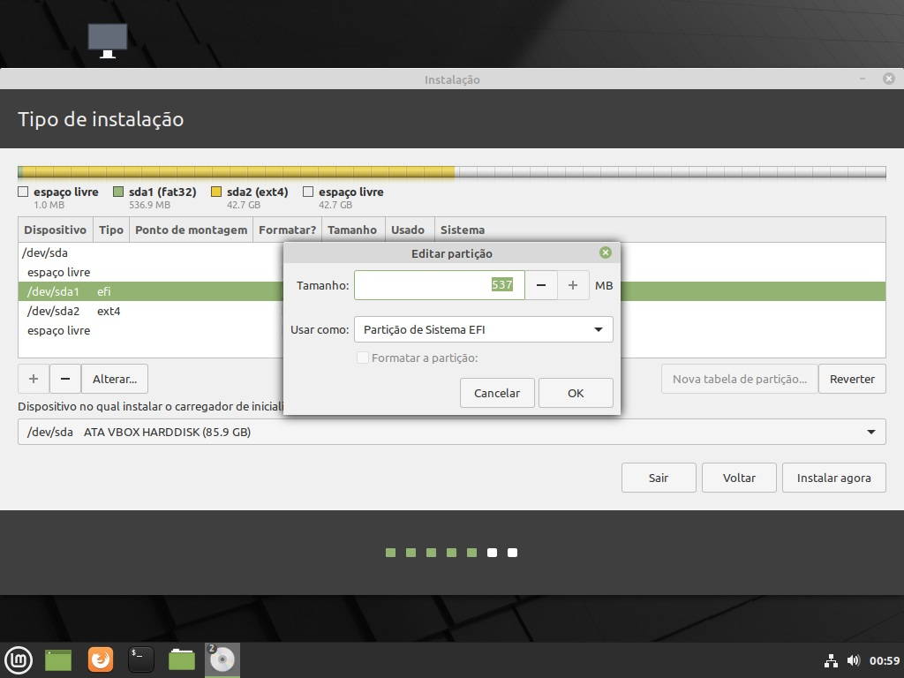
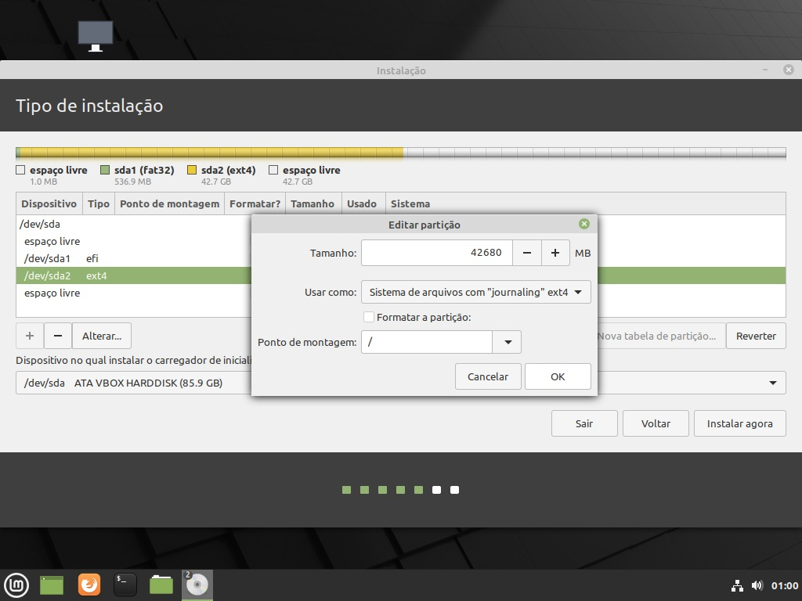
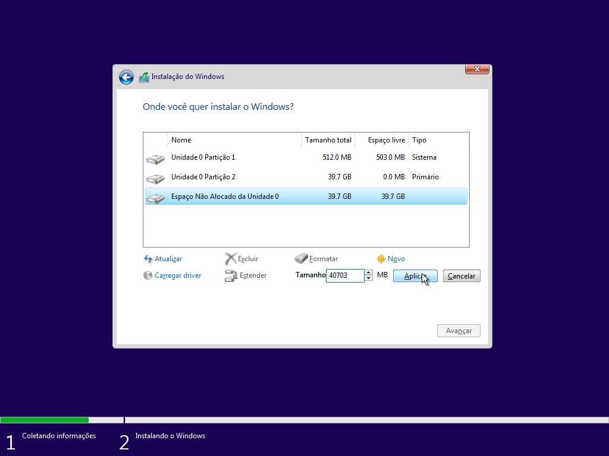
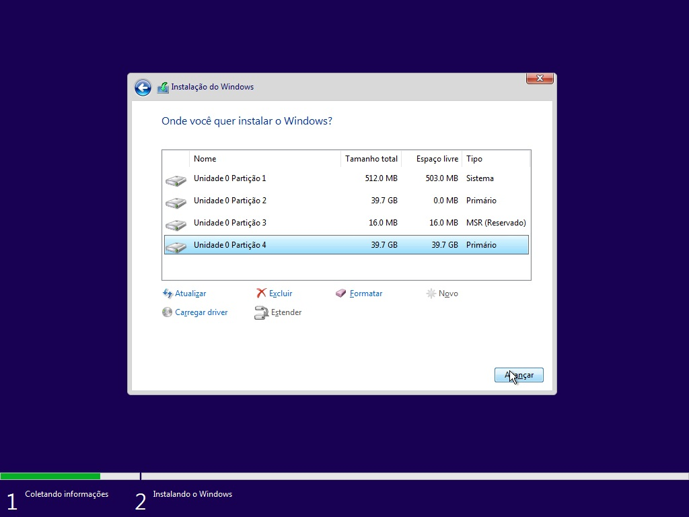
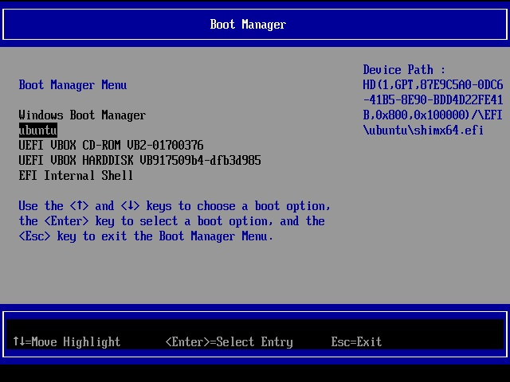
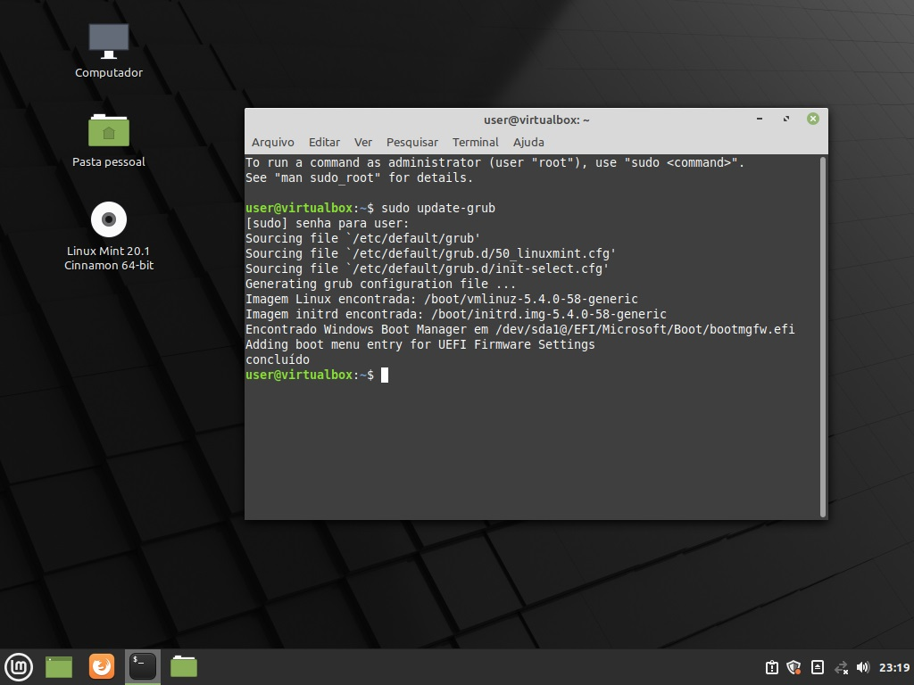
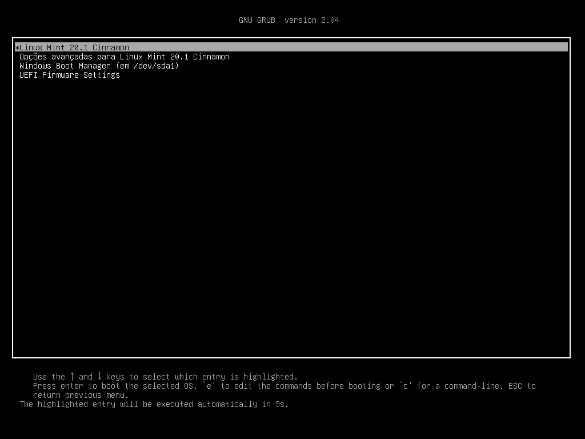

Instalação Avançada de Sistemas - Fazendo Dual Boot
Introdução
A primeira coisa que você deve ter notado aqui é que eu fiz questão de categorizar a instalação de dual boot como uma instalação avançada. Dual boot é uma das coisas mais incompreendidas quando o assunto é instalação de sistemas operacionais e o que infelizmente não falta é desinformação a respeito. Infelizmente o dual boot é vendido como uma coisa fácil de se fazer que vai ser como a segunda vinda de Cristo na terra para solucionar todos os seus problemas, mas acontece que a verdade é outra pois tutorial de dual boot é como um comercial de Ferrari na Sessão da Tarde: Quem tiraria proveito de ver aquilo provavelmente não vai ver.
Em quase todos os tutoriais que existem por aí sempre é dito como fazer o dual boot mas jamais se cai na discussão de se deve ser feito e quando deve ser feito. A única coisa que é dita do dual boot é que você vai poder utilizar tanto o Windows quanto o Linux (ou algum BSD) na mesma máquina para que você possa (em tese) aproveitar os dois sistemas quando quiser... Mas lembre-se: São 2 sistemas para dar problema! São 2 pontos de inicialização que você deve gerenciar! São 2 vezes mais superfície de ataque e são (no mínimo) 2 vezes o conhecimento necessário para lidar do que com um sistema só. E para explicar a analogia que eu fiz acima, a pessoa que pode e deveria usar um dual boot sem problemas é justamente a pessoa que não precisa de um tutorial de como fazer um dual boot, assim como a pessoa que precisa de um tutorial de dual boot é justamente a pessoa que não deveria usar dual boot.
Pra quem realmente serve o dual boot? Serve para a pessoa que tem maestria em 2 sistemas e tem condição de operar 2 sistemas em uma mesma máquina, é o cara que configura o Windows sem problemas e o Linux (ou algum BSD) também sem problema algum. É para aquele indivíduo que seja lá quais sejam os 2 sistemas colocados ele vai dar conta de operar ambos no seu máximo e não pela metade. Se você usa dois sistemas é 2 vezes a mão de obra e não a metade. Dual boot especialmente em notebooks ou em máquinas de somente 1 dispositivo de armazenamento é extremamente problemático especialmente por precisar de configurações específicas que você tem que fazer para que ambos os sistemas funcionem em harmonia sem atrapalharem um ao outro, e isso sem contar que alguns sistemas simplesmente não foram feitos para iniciar "ao lado de outro", o Windows por exemplo tende a "sequestrar" a inicialização do seu computador e "travar" a partição que ele tem acesso.
Via de regra, se você não tem extenso conhecimento de particionamento, de bootloaders, de como configurar completamente a bios... Dual boot não é pra você. Muita gente diz que o dual boot é bom para iniciantes mas o que geralmente acontece é que os novatos que começam no dual boot tratam ele como uma muleta e tem metade das suas atividades em cada inicialização do computador. Se você quer aprender o Linux ou algum BSD, ou qualquer outro sistema, você não pode fazer isso na situação de quem depende do Windows (por exemplo). Migrar é um termo absoluto, é como gravidez ou honestidade, não existe gente meio grávida ou meio honesto e também não existe como fazer meia migração. Querer migrar para Linux ou qualquer outro sistema querendo a segurança de poder voltar para o Windows seria como assinar um casamento no civil já abertamente namorando outra guria pois "vai que não da certo, né?".
O dual boot serve pro indivíduo que está desenvolvendo algo e precisa fazer testes em 2 sistemas e/ou tem domínio de ambos, é para aquele que tem os 2 sistemas na máquina mas poderia perfeitamente se virar com 1 só. É para o cara que já utiliza ferramentas agnósticas (ou seja, que não dependem de um sistema específico) ou que tem um uso isolado de um dos sistemas (por exemplo ter uma partição do Windows única e exclusivamente para jogar).
Se você é do tipo de pessoa que pensa algo como "quero usar o Linux mas preciso do Word para editar meus textos" considere-se oficialmente chutado dessa página. Eu vou utilizar termos técnicos aqui sem a menor pretensão de explicar e se você resolver seguir sem o devido conhecimento pode ter a certeza de que as coisas vão dar errado pra você, esteje avisado.
Instalação Windows + Linux
Como particionar o disco?
A longevidade e viabilidade de um sistema dual boot jás na maneira em que o disco é preparado, ainda na pré-instalação. Você pode simplesmente usar a função de "instalar o Linux ao lado do Windows" ou simplesmente deixar uma partição para o Windows (para que ele ferre com você e ocupe toda e qualquer outra partição livre nos seus discos da maneira que ele desejar). O interessante seria que você (primeiramente fizesse backup utilizando uma unidade de armazenamento externa e que se desconectasse do computador, obviamente) desconetasse toda e qualquer unidade de armazenamento que não vai receber um sistema. Você pode fazer a instalação com mais de uma unidade conectada a máquina, mas lembre-se que as chances são que você vai ter problemas.
Existe uma diferença considerável entre fazer um dual boot em BIOS e UEFI, em UEFI basta que os inicializadores dos sistemas estejam na partição ESP e que o inicializador correto seja selecionado, em modo BIOS é necessário que a sua MBR esteja configurada redirecionando para um boot menu e nesses casos o Windows tende a destruir a configuração de dual boot na MBR. Então de cara é bom você saber: Se você utiliza BIOS e quer fazer dual boot com Windows, vez ou outra vai ter que usar algum Boot Repair Disk ou algo assim, portanto eu não recomendo já que dualboot em BIOS é certeza de dor de cabeça.
Em BIOS
Se ainda assim você quer se arriscar, a instalação é extremamente simples e se resume em reservar uma parte não utilizada do disco para o segundo sistema durante a instalação do Windows, e durante a instalação do segundo sistema configurar um boot menu na MBR (quase sempre apenas um sudo update-grub resolve) ou no caso do Linux utilizar a opção de instalar "ao lado do Windows". Rápido? Sim, mas garante pouco controle do espaço em disco.
Em UEFI
Para Windows + Linux em UEFI eu recomendo a utilização de algum sistema live e gráfico para fazer a tabela de partição (eu geralmente utilizo o Linux Mint), inicie o GParted, no lado superior direito da tela selecione o disco em que você quer fazer o dual boot, na guia Dispositivo selecione Criar tabela de partições, e no tipo de tabela de partições selecione gpt e depois aplicar.
Clique com o botão direito em não alocado e selecione novo para criar uma partição, crie no inicio do disco uma partição, em Tamanho (MiB): escreva 512, em Sistema de arquivos: selecione fat32 e em Nome da partição: escreva esp, aplique as alterações selecionando a guia Editar e depois Aplicar todas as operações. Após isso clique com o botão direito na partição esp, e selecione gerenciar sinalizadores e marque esp, boot também será selecionado automaticamente.
Pronto! Você tem uma partiçao ESP num disco em GPT e agora basta criar uma partição EXT4 para o Linux, lembre-se de selecionar a partição esp durante a instalação do Linux (sem selecionar a opção formatar a partição) e selecionar a raiz (/) na partição ext4. Não crie a partição do Windows pelo GParted pois o Windows cria mais 2 ou 3 partições e se ele só tiver a NTFS que você criou ele vai criar o resto das patições em outras unidades de armazenamento, apenas deixe o espaço livre e crie as partições do Windows utilizando esse espaço livre durante a instalação do Windows.
Recapitulando:
- Criar partição EFI no inicio do disco, 512MiB de tamanho, formato fat32, sinalizada como boot/esp.
- Criar partição do segundo sistema reservado em ext4 (ou qualquer outro formato que o Windows não reconheça para ele não destruir).
- Deixar um espaço livre para que o Windows configure as suas partições da maneira que preferir.
Durante a instalação do segundo sistema selecione a partição EFI, Usar como: Partição de sistema EFI (ou seja lá como o seu sistema designe essa função no instalador), lembre-se de não marcar para formatar essa partição!
Na instalação do segundo sistema selecione a segunda partição reservada do disco como partição raiz:
Instale o Windows normalmente no espaço vazio (e permita que ele crie as partições de sistema que ele pede):

Adicionando boot menu e corrigindo a hora e acesso a unidade do Windows em UEFI
Para não ter que ficar entrando no menu da bios e selecionando o inicializador cada vez que liga o computador você pode utilizar o inicializador do grub para chamar o Windows também, para isso basta selecionar o inicializador do segundo sistema na bios e atualizar as configurações do grub com sudo update-grub. O Windows será adicionado no boot menu para você selecioná-lo caso deseje.
Recapitulando: Entre na bios e selecione o inicializador do segundo sistema como o boot padrão:
Ao entrar no segundo sistema atualize o grub:
Ao iniciar o computador você poderá escolher qual sistema quer iniciar pelo grub:
Ao iniciar um dos sistemas você pode perceber que a hora fica incorreta, para resolver isso inicie o Windows, baixe esse arquivo Aqui, extraia e utilize o Make Windows Use UTC Time para fazer com que o Windows use UTC. Além disso recomendo abrir um terminal como administrador e utilizar o comando powercfg.exe /hibernate off para que o Windows não "trave" o estado da partição ao desligar, lembre-se também de desligar o Fast Boot na sua bios para diminuir as chances do Windows "sequestrar" o boot... Isso ajuda mas não resolve 100% dos problemas.
O maldito "Sequestro de Boot" e como (tentar) resolvê-lo
Então você acabou de instalar o seu sistema, selecionou no Setup da placa mãe para inicializar o Linux e... O Windows carrega. 🙄
Ok, você desliga o computador segurando Shift, liga direto para o Setup, deixa apenas o Linux como opção de inicialização e... O Windows que sobe novamente. 😡
Oh céus, por qual maldita razão isso acontece? Bom, isso pode acontecer pelos mais diversos motivos, mas um deles é que caso a instalação seja em UEFI (o que deveria seria o correto nos dias de hoje) existe uma espécie de interatividade em ordem de boot que não existia na BIOS, que é o sistema conseguir se colocar como prioridade no processo de boot, que por algum motivo o Windows acaba sempre fazendo descaradamente.
Existem diversas maneiras de tentar intervir aqui, mas a que eu mais recomendo é através do uso da ferramenta efibootmgr, que vai estar disponível em qualquer mídia de instalação de sistemas Linux. O efibootmgr é um programa que vai lidar diretamente com as opções de entradas de boot na sua placa mãe, ou seja, podendo incluir novamente uma opção de inicialização, ou mudando a ordem direto pelo sistema, e até mesmo podendo excluir entradas de boot (opção bem nuclear essa, mas válida em alguns casos).
Entrada direta para o Linux
Então o Windows sumiu com sua entrada de boot do Hackintosh OU do FreeBSD OU do Linux, o que você pode fazer? Bom, você pode primeiramente recriar essa entrada direta para a sua placa mãe utilizando o comando abaixo:
efibootmgr --create --disk /dev/storageA --part P1 --label "Título da Entrada" --loader /vmlinuz-linux 'root=UUID do dispositivo rw initrd=\initramfs-linux.img'
Lembre-se de substituir /vmlinuz-linux e \initramfs-linux.img por /vmlinuz-linux-lts e \initramfs-linux-lts.img caso você use o kernel LTS.
Lembre-se de adicionar resume=UUID do dispositivo logo após 'root=UUID do dispositivo caso você utilize hibernação para swap.
Lembre-se de adicionar initrd=\amd-ucode.img OU initrd=\intel-ucode.img antes de initrd=\initramfs-linux.img caso utilize microcode.
Entrada para um Bootloader
Caso você queira, por exemplo, fazer uma entrada para um loader diretamente (como é o caso do Opencore para os Hackintoshes ou do systemd-boot) você pode utilizar o comando abaixo:
Para o OpenCore:
efibootmgr --create --disk /dev/storageA --part P1 --loader /EFI/OC/OpenCore.efi --label "OpenCore"
Para o systemd-boot:
efibootmgr --create --disk /dev/storageA --part P1 --loader /EFI/BOOT/BOOTX64.EFI --label "systemd-boot"
Verificando a ordem de boot:
use o comando abaixo para ver as entradas:
efibootgmr
E, caso queira alterar a ordem delas, basta utilizar:
efibootmgr --bootorder número da entrada primária,número da entrada secundária
Opção Nuclear
Então você criou uma entrada direta para o sistema, e mesmo assim não resolveu, você então criou uma entrada para o bootloader, e mesmo assim não resolveu, você então mudou a ordem das entradas de boot e meeeesmo assim não resolveu... E agora?
Bom, algumas implementações de UEFI são simplesmente ruins mesmo, e aí não interessa o quanto você tente configurar não vai funcionar, esta não é uma opção recomendada MAS em alguns casos que qualquer entrada só resulta num loop de tentativas de boot na Reparação do Windows o que você pode tentar é simplesmente mandar pro espaço a entrada do Windows com o comando abaixo:
efibootmgr --delete-bootnum --bootnum número da entrada do Windows
E pronto! Desde que você tenha a entrada para um bootloader que pode inicializar o Windows pra você, você não terá mais problemas de sequestro de boot (pelo menos até a próxima atualização de sistema) e vai poder selecionar o seu Windows sem problemas.
E o que ninguém te fala sobre dual boot Windows + Linux?
Eu vou tentar resumir: Se você escolher fazer um dual boot com Windows, eu não posso de maneira alguma te garantir um mínimo de estabilidade do sistema. Do ponto de vista de um leigo que a profundidade de conhecimento de sistema é tão profundo quanto água de privada, a ideia de se ter 2 sistemas numa mesma máquina parece incrível, mas certamente não é de forma alguma o ambiente mais estável e seguro para se usar. O mito do dual boot nasceu de uma certa desvantagem de oferta de software que o Linux sofreu de muito tempo atrás, via de regra são pessoas que tem interesse na leveza e responsividade das plataformas Linux mas tem preguiça de achar alternativas de software, e para não ter que (deixar de lado a chupeta) enfrentarem a pesquisa e adaptação elas preguiçosamente vêem esse tipo de instalação como uma alternativa viável (claro que sem o devido conhecimento dos custos e dos riscos...).
O Linux e os BSD's funcionam como um trabalhador bastante humilde e organizado: Eles pegam as ferramentas, eles usam, eles guardam e jamais presumem que são os únicos que podem fazer aquele serviço. O Windows já é um trabalhador folgado e presunçoso: Ele pega as ferramentas, ele usa e joga pelo chão e logo em seguida tranca a porta, impedindo que outros usem aquele espaço ou que tenham acesso as mesmas ferramentas.
4 Exemplos simples que posso destacar aqui é que em primeiro lugar, o Windows não libera a sua partição depois de usar, ele deixa o sistema da arquivos travado para acelerar o (lento) processo de boot dele, então dane-se você se você tem arquivos importantes que quer acessar alí, ele simplesmente trava o acesso. Em segundo lugar, o Windows não só gerencia a sua partição do sistema mas vive fuçando a ordem de boot e o espaço de inicialização do disco, não é incomum você atualizar o Windows e ele simplesmente apagar a entrada de inicialização de qualquer outro sistema instalado na máquina. Em terceiro lugar, o Windows se comunica com a máquina de uma maneira burra e descontrolada, é comum você clicar desligar e ele deixar o computador num estado de hibernação, ou seja: Ao desligar o Windows ele NÃO vai te permitir acessar o seu Linux, ele não manda o devido "sinal" para a bios de que ele encerrou suas atividades e o próximo processo de inicialização pode vir "frio"... Inutilizando o seu dual boot. E em último mas não menos importante é que o Windows simplesmente não foi arquitetado para tal, até mesmo o gerenciador de boot dele não é sofisticado o suficiente para isso, e por isso o que faz com que o dual boot seja funcional são as ferramentas do Linux ou BSD's e não as do Windows, e a maioria esmagadora dos problemas do dual boot nascem justamente dessa incapacidade do Windows de reconhecer e deixar queto os outros sistemas em disco.